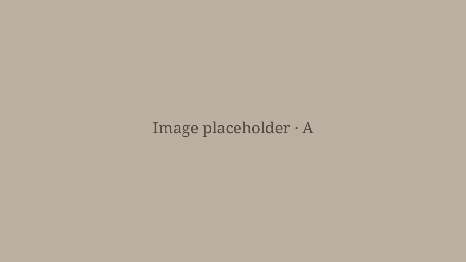
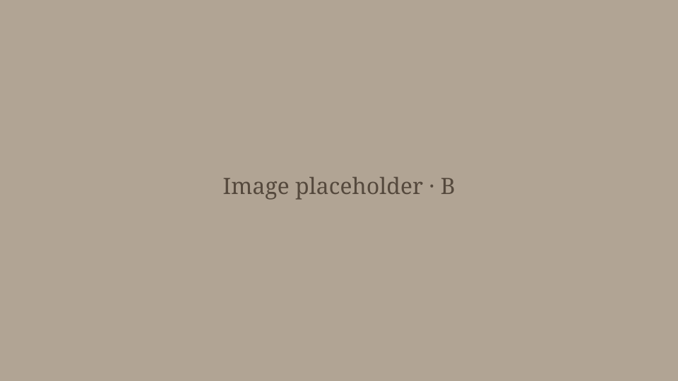

DAY 1
🍻: i dig like a mole
— maya 🌻 (@eclipsemaya_) October 15, 2026
🫧: and that’s great actually
[…]
🍻: although i will say they do cause a lot of problems in my farm… AAAAAAAA-
🫧: oh dear gad- g-gack! 😮
🫧: are you okay?
🍻: …
🫧: *plays flute*
🍻: yeah!#FSFables #Nimuvies #Pipsclips pic.twitter.com/DS8ogXJFvQ
A strange new land, ripe with untold wonders and mysteries… What awaits Gack as he takes his first steps into the world of FSFables? What curious souls will we encounter (or trap), and what secrets will we unearth? Only time will tell what fate has in vine for Gack and us… But first, let's hope we can finally put down some roots and find ourselves a cosy little pumpkin patch to call home. After all, even the most mischievous of pumpkins needs somewhere to rest its vines!
在這裡填入影片小標題
在這裡填入小標題
在這裡填入第一段故事。這是排版示範文字，不是正式故事。
在這裡填入第二段故事。可複製整個段落，增加更多內容。

在這裡填入影片小標題（不需要可刪除整行）
Google Drive 影片（小標題可修改或刪除）
左圖右文的小標題
在這裡填入與圖片搭配的故事文字。
左文右圖的小標題
在這裡填入與圖片搭配的故事文字。

Though still strangers to this foreign land, Gack has already learned much, yet perhaps only scratched the surface. As his powers grow and new acquaintances cross his path, something stirs on the horizon. Adventure awaits… but first, let's hope Gack finish building us that pumpkin abode before our journey truly begins... we need a roof...
拖出卷軸的貼紙會刪除。